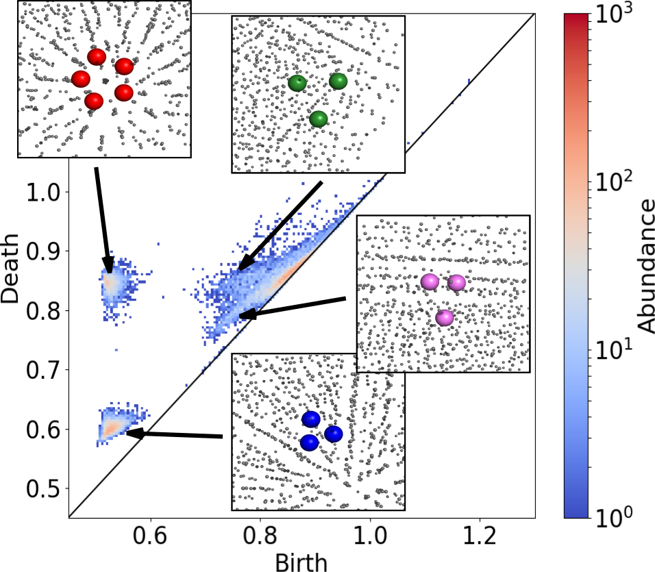
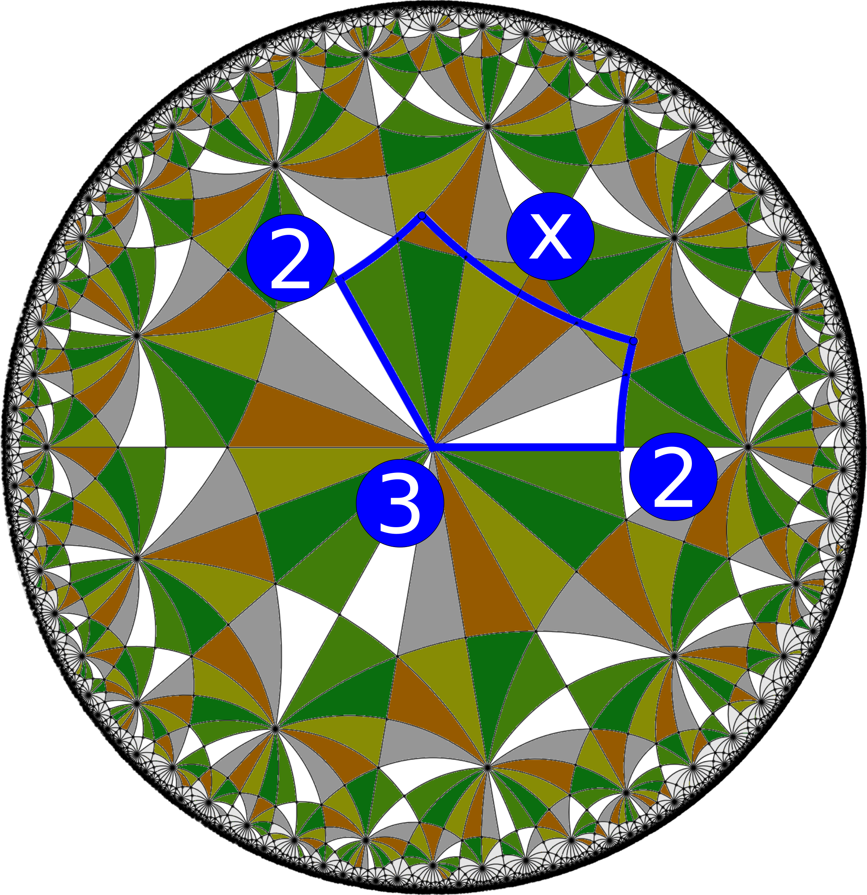

Hi, I'm Martin!
Welcome to my website and online resume.
About me
I am an assistant professor at the Niels Bohr Institute at the University of Copenhagen, Denmark. My main research interests are in the interface between physics, mathematics, condensed and soft matter materials science, computer science, and biophysics. I live in Copenhagen with my wife, Namsoon, who is a researcher at the Physics Department at Lund University, Sweden.
A large part of my research revolves around applications of geometry, topology, and combinatorial group theory to characterize and investigate materials and their properties. I am particularly interested in the emergence of hyperbolic geometry in soft matter systems but apply these ideas and theories in a number of different settings as well. Furthermore, my Ph.D. studies revolved around the statistics and theory of scattering physics, and I am still active in the scattering physics communities as well.
Please download my resume, list of peer-reviewed publications, and teaching portfolio below: Resume List of publications Teaching portfolio
Research highlights
Experimental noise in small-angle scattering can be assessed using the Bayesian indirect Fourier transformation
Abstract: Small-angle X-ray and neutron scattering are widely used to investigate soft matter and biophysical systems. The experimental errors are essential when assessing how well a hypothesized model fits the data. Likewise, they are important when weights are assigned to multiple data sets used to refine the same model. Therefore, it is problematic when experimental errors are over- or underestimated. A method is presented, using Bayesian indirect Fourier transformation for small-angle scattering data, to assess whether or not a given small-angle scattering data set has over- or underestimated experimental errors. The method is effective on both simulated and experimental data, and can be used to assess and rescale the errors accordingly. Even if the estimated experimental errors are appropriate, it is ambiguous whether or not a model fits sufficiently well, as the `true' reduced χ2 of the data is not necessarily unity. This is particularly relevant for approaches where overfitting is an inherent challenge, such as reweighting of a simulated molecular dynamics trajectory against small-angle scattering data or ab initio modelling. Using the outlined method, it is shown that one can determine what reduced χ2 to aim for when fitting a model against small-angle scattering data. The method is easily accessible via the web interface BayesApp.
Evolution of local motifs and topological proximity in self-assembled quasi-crystalline phases
Abstract: Using methods from the field of topological data analysis, we investigate the self-assembly and emergence of three-dimensional quasi-crystalline structures in a single-component colloidal system. Combining molecular dynamics and persistent homology, we analyse the time evolution of persistence diagrams and particular local structural motifs. Our analysis reveals the formation and dissipation of specific particle constellations in these trajectories, and shows that the persistence diagrams are sensitive to nucleation and convergence to a final structure. Identification of local motifs allows quantification of the similarities between the final structures in a topological sense. This analysis reveals a continuous variation with density between crystalline clathrate, quasi-crystalline, and disordered phases quantified by ‘topological proximity’, a visualization of the Wasserstein distances between persistence diagrams. From a topological perspective, there is a subtle, but direct connection between quasi-crystalline, crystalline and disordered states. Our results demonstrate that topological data analysis provides detailed insights into molecular self-assembly.
Polyhedra and packings from hyperbolic honeycombs
Abstract: The simplest 2D regular honeycombs are familiar patterns, found in an extraordinary range of natural and designed systems. They include tessellations of the plane by squares, hexagons, and equilateral triangles. Regular triangular honeycombs also form on the sphere; they are the triangular Platonic polyhedra: the tetrahedron, octahedron, and icosahedron. Regular hyperbolic honeycombs adopt an infinite variety of topologies; these must be distorted to be situated in 3D space and are thus frustrated. We construct minimally frustrated realizations of the simplest hyperbolic honeycombs.
Have a look at my profiles at: Niels Bohr Institute Google Scholar
Or find some of my work deposited in online databases at: EPINET RCSR
Teaching and projects
Ph.D.-school: Geometry and topology in contemporary materials science
Alongside colleagues from Australia and Germany, I am organizing the 3rd edition of this Ph.D.-school taking place in Copenhagen in the summer of 2022. This course will explore the geometry and topology of ordered cellular patterns such as foams, bicontinuous and polycontinuous forms and nets found in synthetic and biological materials, including: mesoporous silicates, metal organic frameworks and coordination polymers, amphiphiles, lipids, star polyphiles forming lyotropic liquid crystals block copolymers including star miktoarm copolymers.
Student projects: Master's project: Modeling of membranes and proteins from neutron reflectometry data Master's project: Persistent homology analysis of phase transitions in glassy systems Bachelor's project: Density functional theory calculations for Schwarzites structures
Code
Please find links to repositories associated to various projects below: